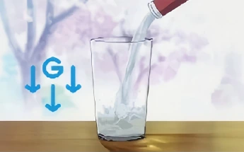
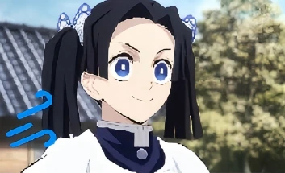
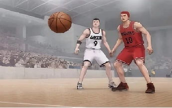
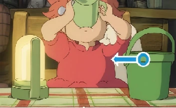
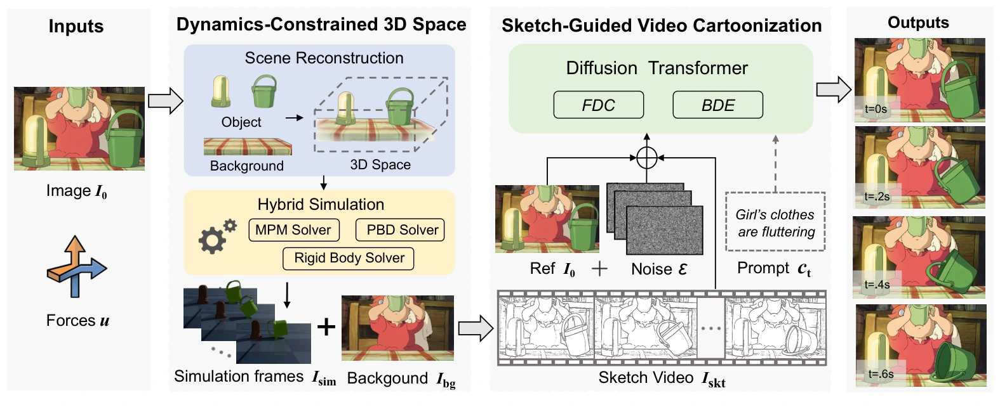

3D Dynamics-Guided Cartoon Video Generation
from a Single Illustration and Forces
Shanghai Jiao Tong University · ACM Multimedia 2026
DynaCartoon output · Wind-driven fabric
Project film
From illustration to motion
Motion examples
From an applied force to a video
Input

DynaCartoon output
Figure 4 comparisons
Hair in the wind

Basketball bounce

Bucket toppling

Method
Physics first, cartoonization second
DynaCartoon reconstructs a 3D scene from the illustration and simulates how its objects respond to forces. Sketches extracted from the simulation guide a learned video model.

Dynamics-constrained 3D space
Scene reconstruction provides object geometry and physical attributes. Hybrid simulation translates the user’s forces into motion for rigid bodies, fluids and deformable objects.
Sketch-guided video cartoonization
Background Dynamic Enhancement adds motion to the surrounding scene. Foreground Deformation Compensation adds expressive object deformation to the simulation-guided result.
Experiments
Quantitative results
The paper evaluates 32 scenarios. VBench measures consistency, smoothness and image quality. GLM-4.5V scores physical realism and visual quality.
| Method | SC | MS | AQ | IQ | PR | VQ |
|---|---|---|---|---|---|---|
| PhysGen3D | 0.207 | 0.995 | 0.502 | 0.536 | 0.687 | 0.642 |
| WonderPlay | 0.204 | 0.994 | 0.511 | 0.548 | 0.691 | 0.651 |
| Gen-4 | 0.212 | 0.995 | 0.578 | 0.699 | 0.573 | 0.706 |
| Veo 3 | 0.209 | 0.992 | 0.580 | 0.719 | 0.642 | 0.684 |
| DynaCartoon | 0.215 | 0.996 | 0.614 | 0.723 | 0.704 | 0.742 |
Scores reproduced from Table 1. Higher is better for all six metrics.
ACM Multimedia 2026
Read and cite
DynaCartoon: 3D Dynamics-Guided Cartoon Video Generation from a Single Illustration and Forces
View publicationBibTeX
@inproceedings{chen2026dynacartoon,
title = {DynaCartoon: 3D Dynamics-Guided Cartoon Video
Generation from a Single Illustration and Forces},
author = {Chen, Zhuo and Quan, Yule and Mao, Haotian
and Zhao, Yang and Yang, Xubo},
booktitle = {Proceedings of the 34th ACM International
Conference on Multimedia},
year = {2026},
doi = {10.1145/3767308.3835019}
}